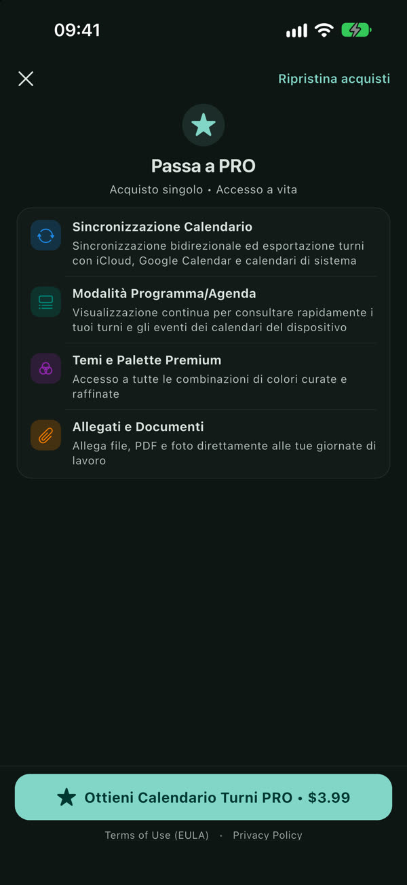
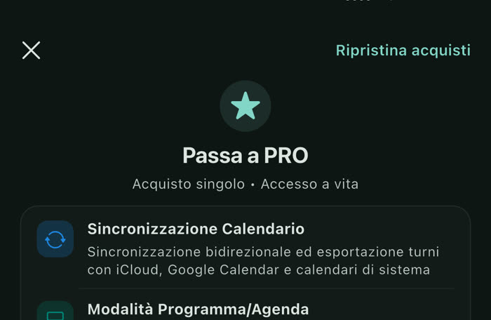

Ripete il ciclo dei turni
Scrivi la sequenza, per esempio Sera Pom Pom Mat Mat R, e la data di inizio: l’app la proietta su tutti i mesi.

Su iOS e Android: scrivi il ciclo dei turni una volta e Calendario Turni lo riporta su tutti i mesi, con i dati salvati solo sul tuo telefono.
Scrivi la sequenza, per esempio Sera Pom Pom Mat Mat R, e la data di inizio: l’app la proietta su tutti i mesi.
Con la versione Pro i turni vanno in Apple Calendario o Google Calendar e gli eventi del telefono compaiono nell’app.

Temi scuri e OLED, naturali, vivaci o minimal. Oppure, con Pro, descrivi il tema che vuoi e l’IA sul telefono lo crea, anche offline.

Si paga una volta e resta tua. Su un telefono nuovo la ripristini da Impostazioni › Versione Pro.

Siamo qui per aiutarti. Se riscontri problemi, hai domande sull’applicazione o desideri suggerire nuove funzionalità, scrivici direttamente.

Apri l’app e vai su Impostazioni > Calendario dispositivo. Abilita l’interruttore e seleziona il calendario in cui salvare automaticamente i tuoi turni. L’app sincronizzerà i tuoi turni istantaneamente.
Sì, al 100%. Calendario Turni memorizza tutte le tue informazioni localmente sul dispositivo. Nessun orario, nota o dato personale viene mai caricato su server esterni o condiviso con terze parti.
Se hai cambiato dispositivo o reinstallato l’app, apri Impostazioni > Versione Pro e tocca il pulsante “Ripristina acquisti”. Il tuo acquisto verrà ripristinato automaticamente senza costi aggiuntivi.
Vai su Impostazioni > Ciclazione Turni. Inserisci la sequenza del tuo ciclo (es. Mattina, Pomeriggio, Notte, Riposo) e imposta la data di partenza: l’app proietterà lo schema su tutti i mesi a venire.